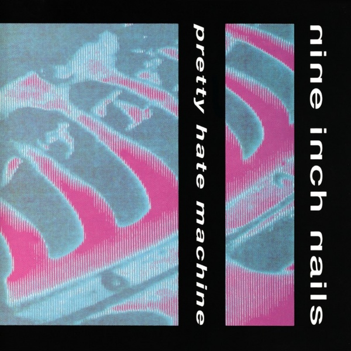
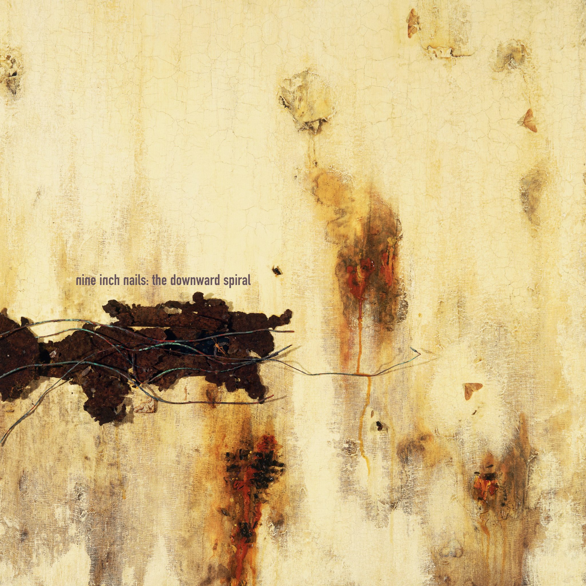
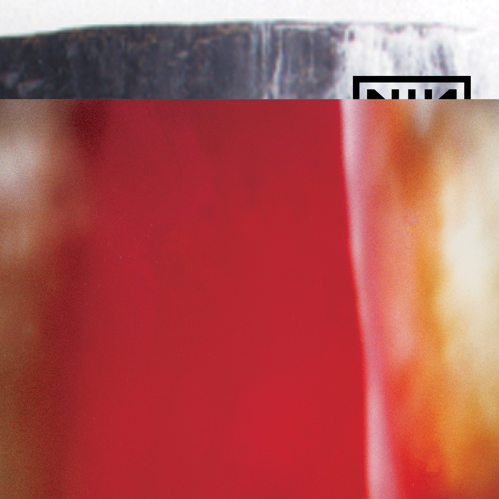
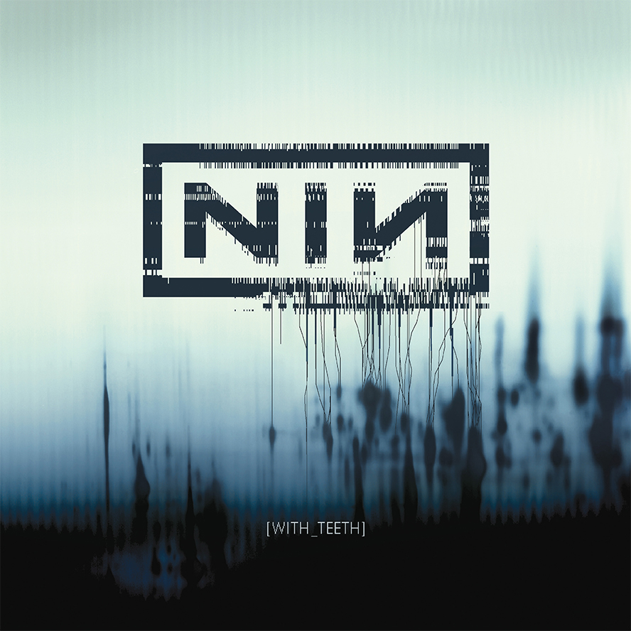
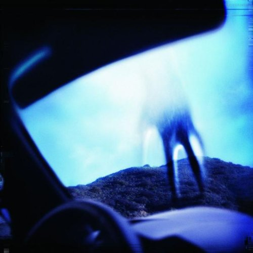
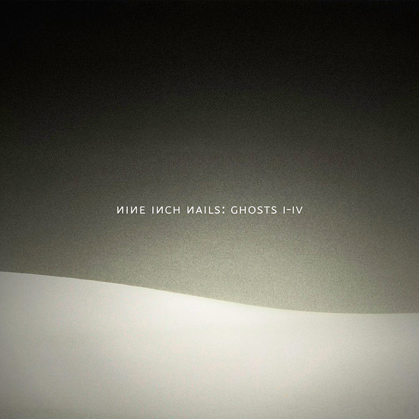
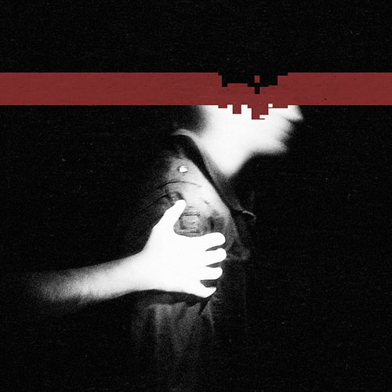
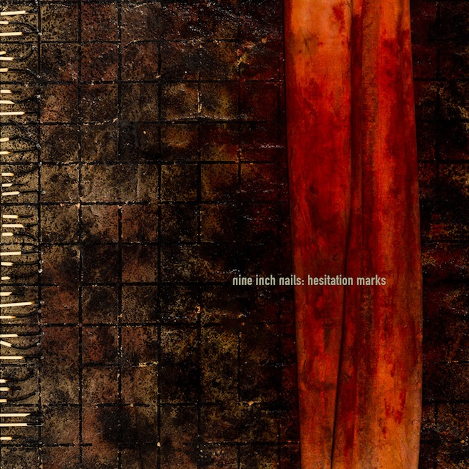
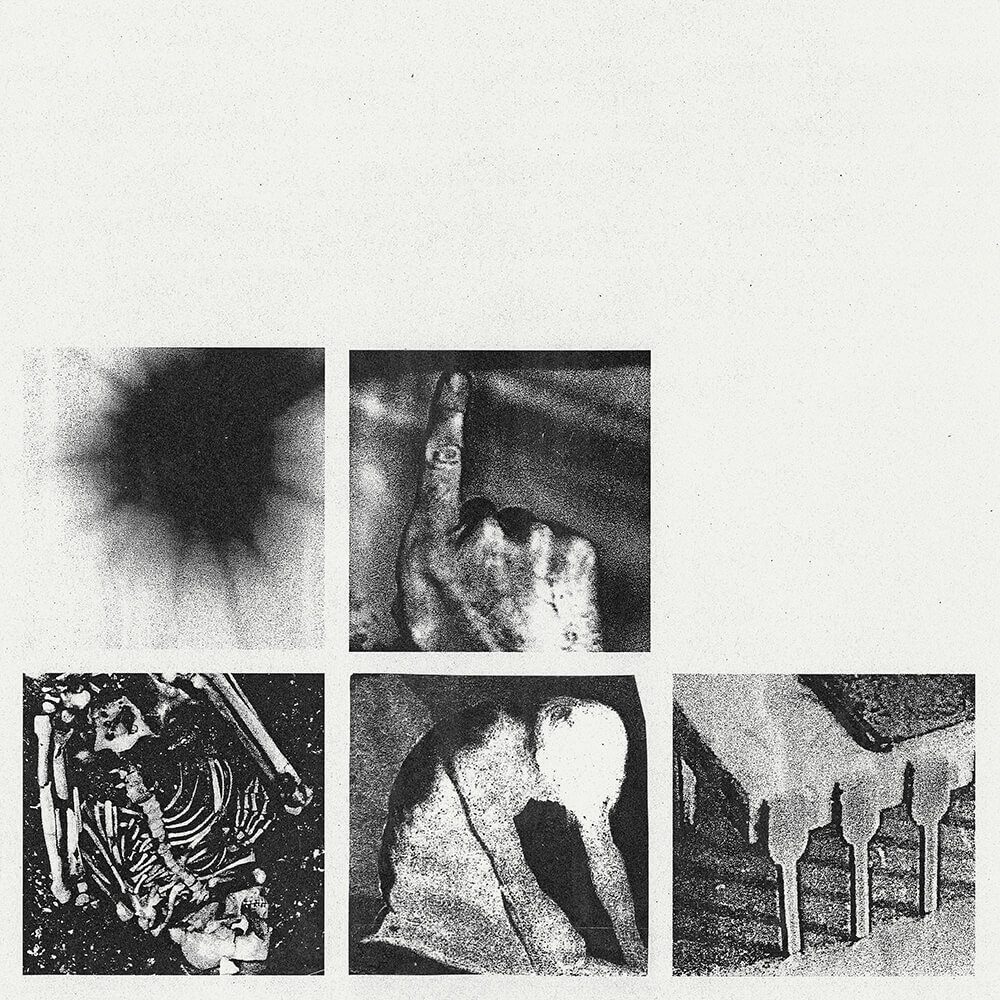
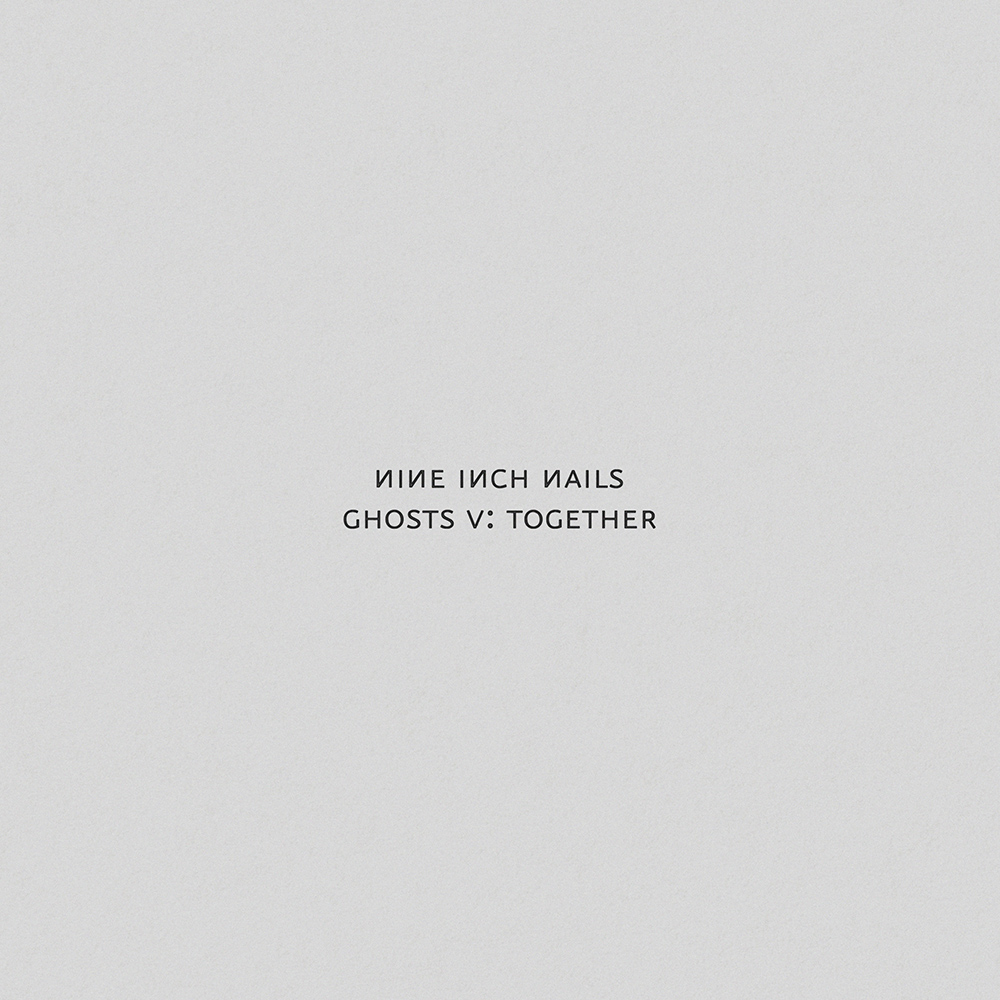

Nine Inch Nails
-

Pretty Hate Machine 1989 -

The Downward Spiral 1994 -

The Fragile 1999 -

With Teeth 2005 -

Year Zero 2007 -

Ghosts I-IV 2008 -

The Slip 2008 -

Hesitation Marks 2013 -

Bad Witch 2018 -

Ghosts V: Together 2020 -

Ghosts VI: Locusts 2020